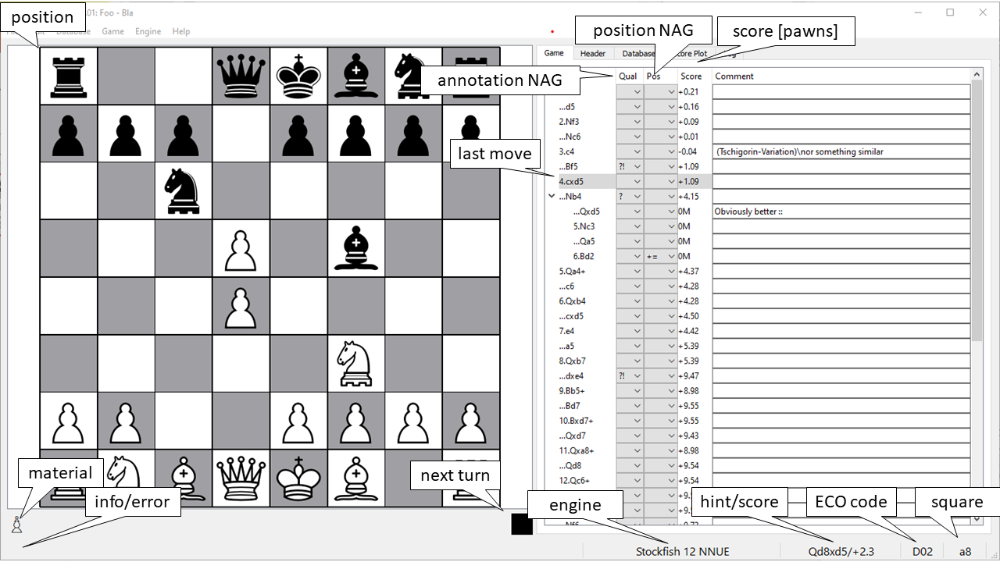

Main Window
Main Window of the Chess GUI

The main Window consists of 4 parts:
On the left, the game board with the material and next turn labels. The next turn may 4 colors white, black, red (mate), yellow (draw)
On the right, the TAB widget with the
Game tree widget displaying the body of the actual game
Headers list widget displaying the header of the actual game
Database list widget displaying all loaded games
Score plot displaying engine and material scores
Log edit displaying communication with the engine in use
On the bottom, the status bar with the labels
info/error displaying information or errors
engine displaying the engine in use
hint/score displaying the hint and score computed by the engine
ECO code displaying the eco code of the current opening, the hint shows the full opening string
square displaying the square under the cursor within the board
Main Window Menu
On the top, the menu with
File menu handling files in the Portable Game Notation (PGN) and pickled PGN (PPNG) formats
Encoding sub-menu to set encoding for opening/saveing PNG-format
Open DB … action to open a PPGN- or PGN-file and replace the current database
Recent sub-menu with the recent PPGN- or PGN-files
Append to DB … action to open a PPGN- or PGN-file and append to the current database
Save DB … action to save the whole database as a PPGN- or PGN-file
Save Game … action to save the actual game as a PGN-file
Exit action to terminate the GUI
Edit menu with obvious functionality with the exception of
Copy Game, i.e. the actual game PGN is copied to the clipboard
Copy FEN, i.e. the actual position is copied to the clipboard
Promote/Demote Variant promote/demote the variant selected in the Game TAB
Promote Variant to Main promote the variant selected in the Game TAB to mainline
Delete Variant delete the variant selected in the Game TAB
Undo Move deletes the end move of a sequence (main line or variant)
Database menu with obvious functionality with the exception of
Remove Games removes selected games in the Database TAB
Paste Game, i.e. the actual game PGN from the clipboard and added to the Database
Paste FEN, i.e. the actual position is pasted from the clipboard and added to the Database
Game menu with obvious functionality with the exception of
Select Header Elements … opens a dialog to add/remove header elements according to the PGN standard
Show Move Options shows by left-button selecting a square the weighted options
Warn of Danger shows squares attacked by the opponent
Engine menu for handling Universal Chess Interface (UCI) engines with
Select Engine sub-menu to select the engine for hints/scores and annotations
Search Depth sub-menu to set the search depth of the selected engine
Annotate Last Move annotates the move leading to actual position
Annotate All annotates the actual game
# Annotations defines the number of variants to be suggested in case of a blunder
Annotate Variants defines the number of half moves (PLY) to be shown in variants
Show Scores toggle actions enables the score part of the hint/score label of the status bar
Show Hints toggle actions enables the hint part of the hint/score label of the status bar
Configure … opens a dialog to add/remove/configure engines
Debug logs the communication with engine in the Log TAB
Keyboard and Mouse Contol
To allow for a user-friendly usage, the game can be controlled by keyboard and/or mouse:
Game Control by Keyboard/Mouse/Mouse Wheel
Key/Wheel |
Board |
Game-TAB |
Description |
|---|
up | scroll-up |
✔ |
✔ |
goto last move |
down | scroll-down |
✔ |
✔ |
goto next move |
left |
|
✔ |
step into variant |
right |
|
✔ |
step out of a variant |
home |
|
✔ |
goto initial move |
end |
|
✔ |
goto end-of-game |
mouse-left-press |
✔ |
|
begin move |
mouse-left-release |
✔ |
|
end move |
Control-P |
|
✔ |
promote variant |
Control-D |
|
✔ |
demote variant |
Control-R |
|
✔ |
remove variant |
Control-M |
|
✔ |
promote variant to mainline |
Control-W |
|
✔ |
toggle warn of danger |
In addition, several standard key strokes are supported:
Other Key-Codes
Key |
Description |
|---|
Control-Z |
undo last move |
Control-F |
flip board |
Control-C |
copy game (PGN) to clipboard |
Control-V |
paste game (PGN) from clipboard |
Control-Shift-C |
copy position (FEN) to clipboard |
Control-Shift-V |
paste position (FEN) from clipboard |
{kind=link}